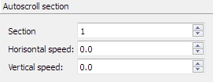
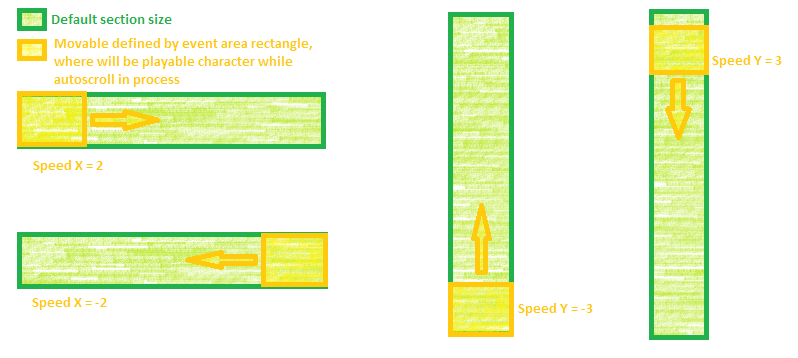

Here you can define autoscrolling of target section.
Notes!
- Don't forget to define target section size in the section properties of same event. If you wasn't redefine of section. autoscroll will not be working.
- If you want use autoscrolling for original SMBX, please, be careful, SMBX engine have a bug: Autoscroll working only for one section and only if this section - first on current level (contains player's start point), and, if you will try autoscroll for other section, it will not be work.
Horizontal speed:
If <0 - move to left.
If >0 - move to right
If =0 - stop
Vertical speed:
If <0 - move to up
If >0 - move to down
If =0 - stop

1) At first step, you must define the default section size what will be autoscrolled.
2) Open in the same event the "section settings" tab and define the little size. This is a movable part of section, where playable character will be while this part will be scrolled.

The examples of autoscrolling areas:

3) Set the number of section which will be autoscrolled and the speed X and speed Y values.
Don't forgot mark this event as autostart!
If you made all correctly, will be started the autoscrolling on start of this level.
See also:
Copyright © 2014-2015 Platformer Game Engine by Wohlstand project. All rights reserved.